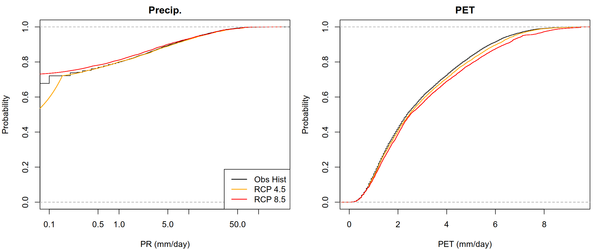

library(CDFt)
library(ggplot2)
library(lubridate)Bias correction of climate models
1 Load necessary libraries
2 Load preprocessed data
As described in the database section, preprocessed datasets can be efficiently reloaded using the readRDS() function. In the code chunk below, we reload the observational and climate projection dataset that was previously prepared and exported. The structure of the R objects is fully preserved: the observed data are stored in a dataframe, while the climate projection data are organized as a nested list, ensuring seamless reuse in subsequent analyses.
hist_obs = readRDS("output_preprocessed/processed_obsdata_lez.rds")
names(hist_obs) = c("Date", "PR", "T", "PET", "Q")
str(hist_obs)'data.frame': 10592 obs. of 5 variables:
$ Date: Date, format: "1977-01-01" "1977-01-02" ...
$ PR : num 2.85 0 0 1.7 6.4 5.95 0 0 0 0 ...
$ T : num 6.84 4.6 3.34 2.95 3.98 ...
$ PET : num 0.75 0.9 1.55 2.25 1 0.7 1.75 2.1 1.2 0.6 ...
$ Q : num 30 24 16 12 10 8.23 7.42 6.53 5.91 5.47 ...clim_proj = readRDS("output_preprocessed/processed_climatedata_lez.rds")
str(clim_proj[1])List of 1
$ climdataCLM:List of 3
..$ hist :'data.frame': 10592 obs. of 4 variables:
.. ..$ Date: Date[1:10592], format: "1977-01-01" "1977-01-02" ...
.. ..$ PR : num [1:10592] 0.00 0.00 0.00 0.00 6.57e-13 ...
.. ..$ TMAX: num [1:10592] 10.63 10.56 10.31 9.93 10.12 ...
.. ..$ TMIN: num [1:10592] 4.41 3.77 5.09 4.42 3.27 ...
..$ rcp45:'data.frame': 10592 obs. of 4 variables:
.. ..$ Date: Date[1:10592], format: "2070-01-01" "2070-01-02" ...
.. ..$ PR : num [1:10592] 6.393 0.595 0 0 0.847 ...
.. ..$ TMAX: num [1:10592] 7.48 10.66 11.3 15.6 10.68 ...
.. ..$ TMIN: num [1:10592] 2.96 4.47 3.22 3.56 3.5 ...
..$ rcp85:'data.frame': 10592 obs. of 4 variables:
.. ..$ Date: Date[1:10592], format: "2070-01-01" "2070-01-02" ...
.. ..$ PR : num [1:10592] 5.97 2.32 5.21e-08 1.12e-12 1.93 ...
.. ..$ TMAX: num [1:10592] 16.8 15.5 18.7 19.9 18.9 ...
.. ..$ TMIN: num [1:10592] 13.4 12.7 14.4 13.6 11.8 ...Before applying bias correction, we first compute the Potential Evapotranspiration (PET) from the climate model data. In this step, we use the Hargreaves and Samani equation (Hargreaves & Samani, 1985), a widely adopted temperature-based method that estimates PET from daily temperature extremes and extraterrestrial radiation. Calculating PET at this stage ensures that both precipitation and evapotranspiration are consistently represented, which is essential for subsequent hydrological modeling and bias-correction procedures.
Expand to see the calc_hargreaves function
calc_hargreaves = function(df, lat = 44.1958)
{
# Convert Latitude to Radians
phi = lat * pi / 180
# Get Day of Year from the Date column
doy = yday(df$Date)
# 1. Inverse relative distance Earth-Sun (dr)
dr = 1 + 0.033 * cos(2 * pi * doy / 365)
# 2. Solar declination (delta)
delta = 0.409 * sin(2 * pi * doy / 365 - 1.39)
# 3. Sunset hour angle (ws)
# This handles the geometry of the Earth's curve at 43.7 degrees
ws = acos(-tan(phi) * tan(delta))
# 4. Extraterrestrial radiation (Ra) in MJ/m2/day
Ra = (24 * 60 / pi) * 0.0820 * dr * (ws * sin(phi) * sin(delta) + cos(phi) * cos(delta) * sin(ws))
# 5. Convert Ra to evaporation equivalent (mm/day)
# 1 MJ/m2/day is approx 0.408 mm/day
Ra_mm = Ra * 0.408
# 6. Final Hargreaves Calculation
T_mean = (df$TMAX + df$TMIN) / 2
# pmax ensures we don't get NaNs if Tmin > Tmax (though rare)
PET = 0.0023 * Ra_mm * (T_mean + 17.8) * sqrt(pmax(0, df$TMAX - df$TMIN))
return(PET)
}# Apply the calc_hargreaves() function to the 'hist', 'rcp45', and 'rcp85' dataframes
clim_proj[["climdataCLM"]] = lapply(clim_proj[["climdataCLM"]], function(df) {
df$PET = calc_hargreaves(df, lat = 44.1958)
df[, c("Date", "PR", "PET")]
})
clim_proj[["climdataCNRM"]] = lapply(clim_proj[["climdataCNRM"]], function(df) {
df$PET = calc_hargreaves(df, lat = 44.1958)
df[, c("Date", "PR", "PET")]
})
clim_proj[["climdataIPSL"]] = lapply(clim_proj[["climdataIPSL"]], function(df) {
df$PET = calc_hargreaves(df, lat = 44.1958)
df[, c("Date", "PR", "PET")]
})Now, we compute multi-model mean precipation and evapotranspiration before applying bias correction.
model_names = c("climdataCLM", "climdataCNRM", "climdataIPSL")
scenarios = c("hist", "rcp45", "rcp85")
multi_model_mean = list()
for (scen in scenarios) {
# Extract all models for a given scenario
dfs = lapply(model_names, function(m) clim_proj[[m]][[scen]])
# Stack the values into matrices
PR_mat = do.call(cbind, lapply(dfs, function(df) df$PR))
PET_mat = do.call(cbind, lapply(dfs, function(df) df$PET))
# Calculer la moyenne multi-modèles (na.rm = TRUE pour ignorer les NA)
PR_mean = rowMeans(PR_mat, na.rm = TRUE)
PET_mean = rowMeans(PET_mat, na.rm = TRUE)
# Compute the multi-model mean
multi_model_mean[[scen]] = data.frame(
Date = dfs[[1]]$Date,
PR = PR_mean,
PET = PET_mean
)
}
str(multi_model_mean)List of 3
$ hist :'data.frame': 10592 obs. of 3 variables:
..$ Date: Date[1:10592], format: "1977-01-01" "1977-01-02" ...
..$ PR : num [1:10592] 0.00 0.00 0.00 0.00 2.19e-13 ...
..$ PET : num [1:10592] 0.639 0.682 0.695 0.648 0.735 ...
$ rcp45:'data.frame': 10592 obs. of 3 variables:
..$ Date: Date[1:10592], format: "2070-01-01" "2070-01-02" ...
..$ PR : num [1:10592] 2.131081 0.587775 0.000654 0.065439 1.31717 ...
..$ PET : num [1:10592] 0.597 0.721 0.831 0.9 0.664 ...
$ rcp85:'data.frame': 10592 obs. of 3 variables:
..$ Date: Date[1:10592], format: "2070-01-01" "2070-01-02" ...
..$ PR : num [1:10592] 2.79 2.079 0.208 0.147 2.787 ...
..$ PET : num [1:10592] 0.655 0.644 0.76 0.91 0.763 ...3 Apply bias correction
Bias-correction techniques are commonly applied to reduce systematic discrepancies and make climate projections suitable for hydrological applications. Several methods have been developed to correct the bias of climate model simulations. Here, we apply the Cumulative Distribution Function-transform (CDF-t) method. The CDF-t algorithm consists in adjusting the cumulative distribution function (CDF) derived from a GCM over the historical period so that it matches the empirical distribution of the observed data. The calibrated transformation function is then applied to the projected CDF of the GCM for the future period. For more details, readers are referred to Michelangeli et al. (2009).
We will use the CDFt R package (Vrac & Michelangeli, 2021) to apply bias correction. Given the structure of our preprocessed climate datasets, we first define a helper function to automate the bias correction process for the historical period (hist), as well as the future climate scenarios (rcp245 and rcp585) for each climate model.
Show the cdft.bias.corr() funtion code
cdft.bias.corr = function(nested_list, df_obs = hist_obs, scenarios = c("rcp45", "rcp85"))
{
# 1. Validation: We MUST have a 'hist' period in the nested list to calibrate
if (!"hist" %in% names(nested_list)) {
stop("The list must contain a 'hist' dataframe for calibration.")
}
# 2. Extract common historical data once
# CDFt works on vectors of data
obs_hist_pr = df_obs$PR
mod_hist_pr = nested_list$hist$PR
obs_hist_pet = df_obs$PET
mod_hist_pet = nested_list$hist$PET
# 3. Apply to each scenario
nested_list[scenarios] = lapply(nested_list[scenarios], function(df_proj) {
# --- Correct Precipitation ---
# CDFt returns a list. $DS is the corrected Downscaled series.
res_pr = CDFt(ObsRp = obs_hist_pr,
DataGp = mod_hist_pr,
DataGf = df_proj$PR)
df_proj$PRadj = res_pr$DS
df_proj$PRadj = pmax(res_pr$DS, 0)
# --- Correct PET ---
res_pet = CDFt(ObsRp = obs_hist_pet,
DataGp = mod_hist_pet,
DataGf = df_proj$PET)
df_proj$PETadj = res_pet$DS
df_proj$PETadj = pmax(res_pet$DS, 0)
return(df_proj)
})
# Note: CDFt is designed for future projections.
# To 'correct' the historical period itself for validation,
# you would set DataGf = DataGp (mod_hist).
res_hist_pr = CDFt(obs_hist_pr, mod_hist_pr, mod_hist_pr)
nested_list$hist$PRadj = res_hist_pr$DS
res_hist_pet = CDFt(obs_hist_pet, mod_hist_pet, mod_hist_pet)
nested_list$hist$PETadj = res_hist_pet$DS
nested_list$hist$PRadj = pmax(res_hist_pr$DS, 0)
nested_list$hist$PETadj = pmax(res_hist_pet$DS, 0)
return(nested_list)
}Now, our entire bias correction workflow becomes just one step:
biascorrected.climdata = cdft.bias.corr(nested_list = multi_model_mean)
str(biascorrected.climdata)List of 3
$ hist :'data.frame': 10592 obs. of 5 variables:
..$ Date : Date[1:10592], format: "1977-01-01" "1977-01-02" ...
..$ PR : num [1:10592] 0.00 0.00 0.00 0.00 2.19e-13 ...
..$ PET : num [1:10592] 0.639 0.682 0.695 0.648 0.735 ...
..$ PRadj : num [1:10592] 0.00127 0.00127 0.00127 0.00127 0.00138 ...
..$ PETadj: num [1:10592] 0.578 0.77 0.797 0.612 0.895 ...
$ rcp45:'data.frame': 10592 obs. of 5 variables:
..$ Date : Date[1:10592], format: "2070-01-01" "2070-01-02" ...
..$ PR : num [1:10592] 2.131081 0.587775 0.000654 0.065439 1.31717 ...
..$ PET : num [1:10592] 0.597 0.721 0.831 0.9 0.664 ...
..$ PRadj : num [1:10592] 0.1309 0.0236 0 0 0.0878 ...
..$ PETadj: num [1:10592] 0.427 0.815 1.061 1.179 0.627 ...
$ rcp85:'data.frame': 10592 obs. of 5 variables:
..$ Date : Date[1:10592], format: "2070-01-01" "2070-01-02" ...
..$ PR : num [1:10592] 2.79 2.079 0.208 0.147 2.787 ...
..$ PET : num [1:10592] 0.655 0.644 0.76 0.91 0.763 ...
..$ PRadj : num [1:10592] 0.311 0 0 0 0.311 ...
..$ PETadj: num [1:10592] 0.482 0.426 0.833 1.163 0.841 ...To visualize the bias correction results, we plot the the Empirical Cumulative Distribution Functions (ECDFs) to validate the effectiveness of the CDF-t algorithm.
Show the code
vars = c("PR", "PET")
# Use a 1-row, 2-column layout
par(mfrow = c(1, 2), mar = c(4, 4, 2, 1))
for (v in vars) {
adj_v = paste0(v, "adj") # Pour appeler PRadj ou PETadj
obs_val = hist_obs[[v]]
raw_mean_val = biascorrected.climdata$hist[[v]]
adj_mean_val = biascorrected.climdata$hist[[adj_v]] # La nouvelle courbe corrigée
# Limites d'axes
x_lim = range(c(obs_val, raw_mean_val, adj_mean_val), na.rm = TRUE)
if (v == "PR") { plot_log = "x"; x_lim[1] = 0.1 } else { plot_log = "" }
# Plot ECDF: Observé (Noir)
plot(ecdf(obs_val), do.points = FALSE,
verticals = TRUE, col = "black", lwd = 3,
log = plot_log, xlim = x_lim,
main = ifelse(v=="PR", "Precip.", "PET"),
xlab = paste(v, "(mm/day)"), ylab = "Prob.")
# ECDF: Brut (Rouge, pointillé)
plot(ecdf(raw_mean_val), add = TRUE, do.points = FALSE, verticals = TRUE,
col = "red", lwd = 1, lty = 1)
# ECDF: Ajusté (Bleu, continu) - C'EST CELLE-CI QUI DOIT COLLER À L'OBS
plot(ecdf(adj_mean_val), add = TRUE, do.points = FALSE, verticals = TRUE,
col = "green", lwd = 1, lty = 1)
if(v == "PR") {
legend("bottomright",
legend = c("Observed", "Raw GCM Mean", "Adjusted (CDF-t)"),
col = c("black", "red", "green"), lty = c(1, 1, 1), lwd = 1.5, bty = "o")
}
}
To visualize the climate change signal, we will now compare the Observed historical data against the Bias-Corrected Future Projections (RCP 4.5 and RCP 8.5). Unlike your previous plot where the green and black lines overlapped perfectly, these plots will show a shift. This shift represents the actual climate change signal (e.g.,different rainfall patterns) after the systematic model biases have been removed.

As in the previous sections, the bias-corrected climate datasets are saved using the saveRDS() function. This approach preserves the internal structure of the R objects (including nested lists and data frames) and facilitates efficient reloading and reuse in subsequent processing steps.
# Create an output directory if it doesn't exist
if (!dir.exists("output_biascorrection")) dir.create("output_biascorrection")
# Save the bias-corrected climate data while preserving object structure
saveRDS(biascorrected.climdata,
file="output_biascorrection/biascorrected_climdata.rds")References
Hargreaves, G. H., & Samani, Z. A. (1985). Reference crop evapotranspiration from temperature. Applied Engineering in Agriculture, 1(2), 96–99. https://doi.org/10.13031/2013.26773
Michelangeli, P.-A., Vrac, M., & Loukos, H. (2009). Probabilistic downscaling approaches: Application to wind cumulative distribution functions. Geophysical Research Letters, 36(11). https://doi.org/https://doi.org/10.1029/2009GL038401
Vrac, M., & Michelangeli, P.-A. (2021). CDFt: Downscaling and bias correction via non-parametric CDF-transform. https://CRAN.R-project.org/package=CDFt